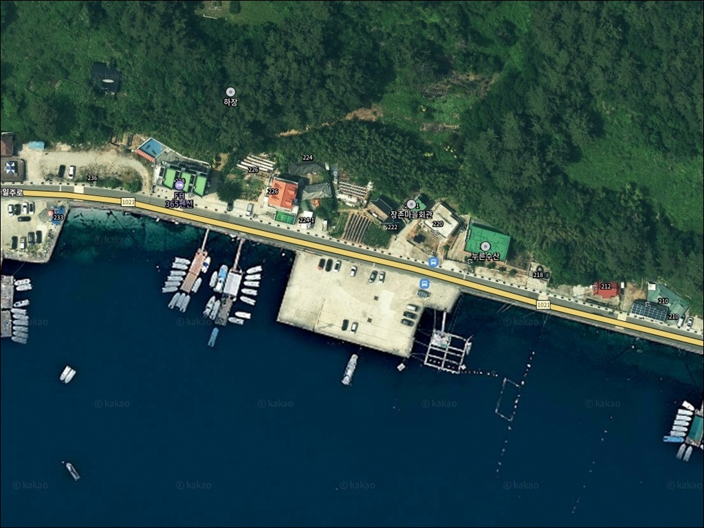
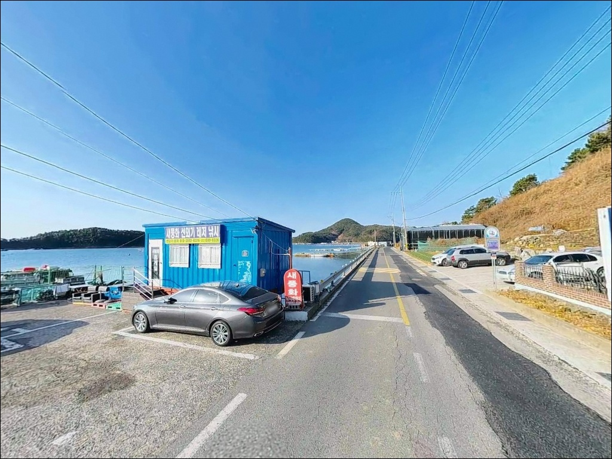
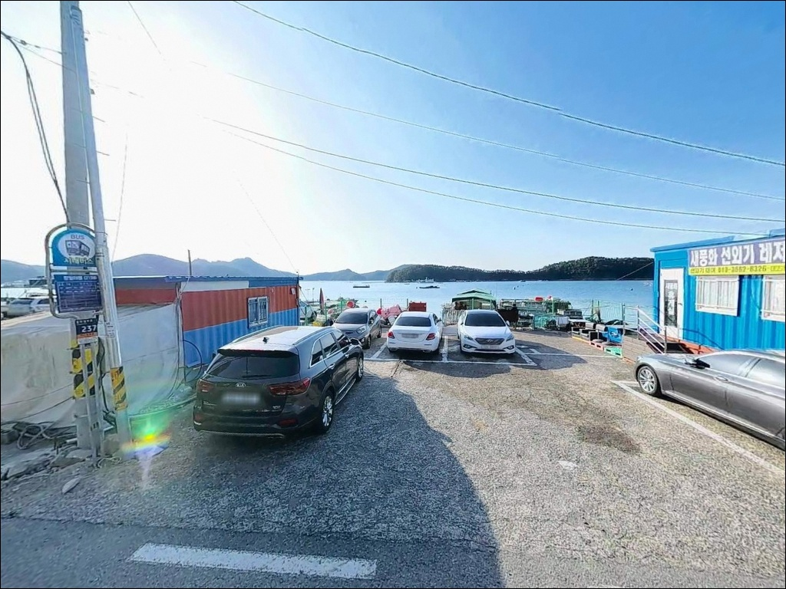
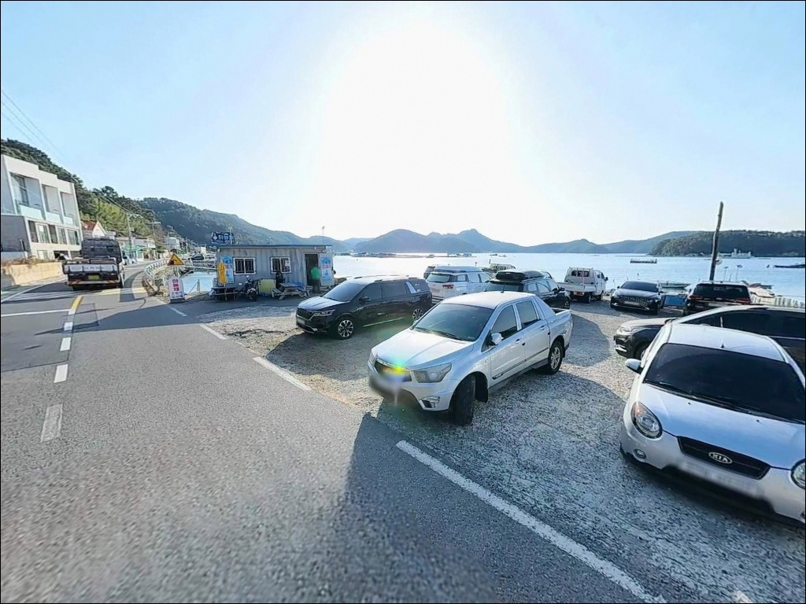
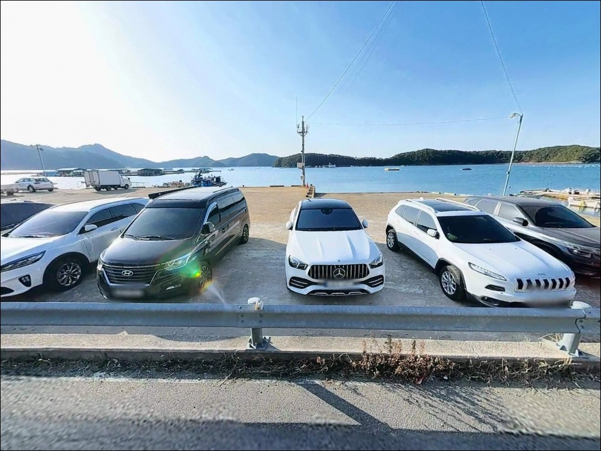
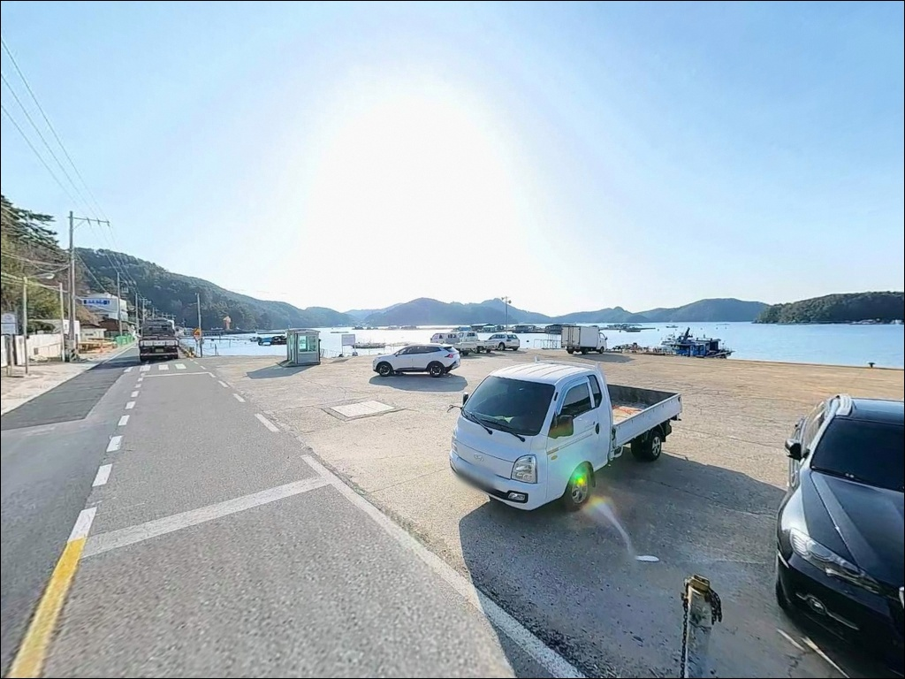
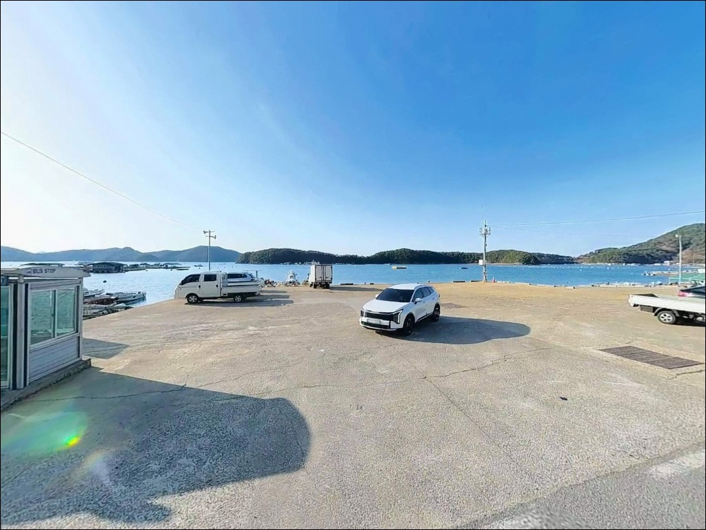
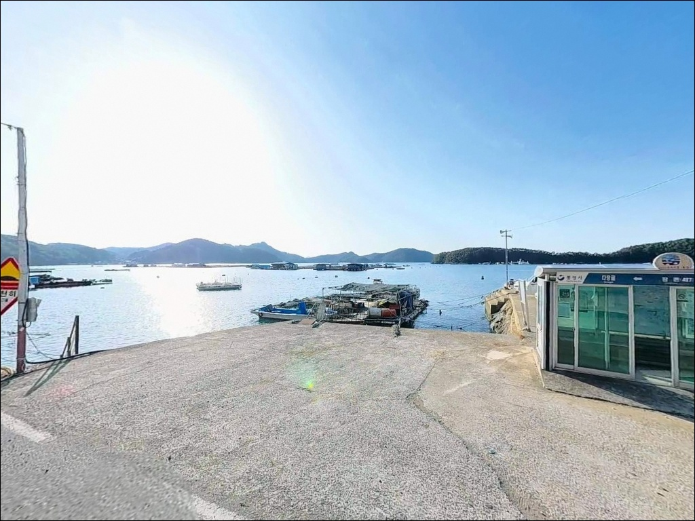
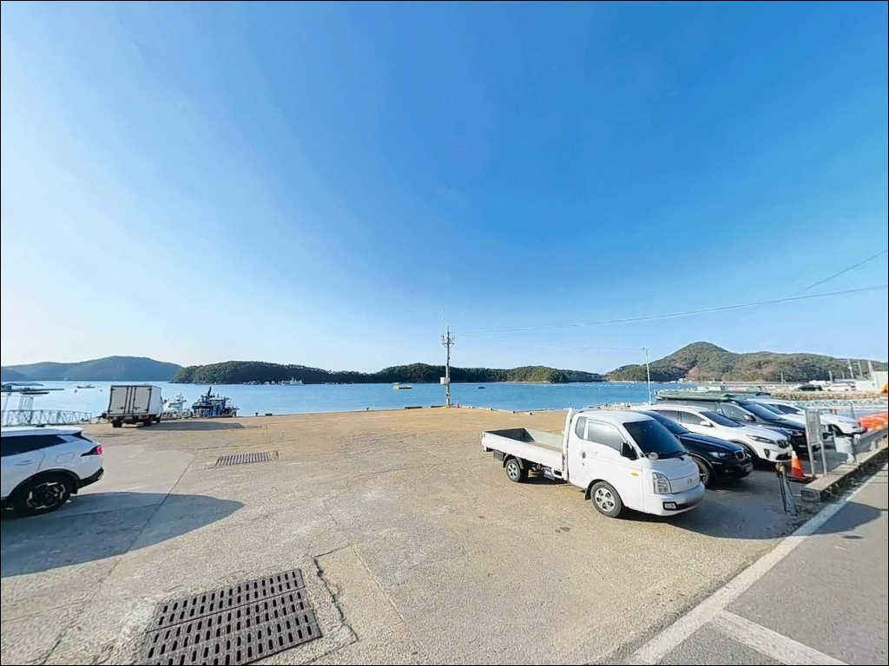

잔잔한 내만 통영 장촌선착장, 수심 6미터 바닥층 노리는 찌낚시


포인트 안내
장촌선착장
경남 통영시 산양읍 풍화리 361-4
풍화리 일대 내만은 외해 노출 없이
호수처럼 잔잔한 수면을 유지하는 구조입니다.
바람이 강한 날에도 파도 영향이 적고,
선착장 앞 수심이 어느 정도 확보되어
근거리 낚시 자리로 운용이 가능한 지형입니다.
장촌낚시마트를 중심으로
선외기 대여와 좌대낚시 시설이
함께 운영되는 곳이기도 합니다.
단독 도보 낚시와 배낚시 출조를
동시에 검토할 수 있어,
방문 목적에 따라 운용 방식이
달라지는 포인트입니다.
이 글은 장촌선착장의
진입 환경, 차박 여건, 낚시 지형 조건,
스타일별 공략 방향에 집중합니다.
조황 단정이나 특정 어종 보장은
이 글의 범위에 포함되지 않습니다.

1. 진입 동선과 선착장 접근성
산양관광일주도로(풍화일주로)를 따라
풍화리 마을 방향으로 진입한 뒤,
마을 안쪽 골목을 통해 선착장에 닿는 구조입니다.
진입로는 편도 1차로 수준의 포장 마을길이며,
승용차와 소형 SUV 기준으로 진입과 회차에 무리가 없는
편이입니다.
대형 캠핑카나 장축 차량이라면
골목 구간에서 회차 여유가 부족할 수 있습니다.
출발 전 위성지도로 마을 진입 골목 폭을
미리 확인해 두는 편이 안전합니다.
선착장 진입부 소규모 공터에서
어느 정도 회차가 가능한 구조이지만,
어선 이용자 차량이 우선되는 공간임을
염두에 두어야 합니다.
주차는 선착장 입구 쪽 콘크리트 부지와
풍화일주로 갓길을 활용합니다.
선착장 앞 공터는 3~5대 수용이 가능한 수준으로,
이른 새벽 조업 출항이 있는
선외기 업체 차량과 겹치지 않도록
동선을 미리 파악해 두는 것이 기본입니다.

2. 차박 환경과 야간 체류 여건
장촌선착장은 선착장 바로 앞 공터에서
차박 베이스를 설정할 수 있는 구조입니다.
내만 지형 특성상 파도 소음이 거의 없고,
풍화리 마을 외곽 쪽으로 민가 밀집도가
낮은 편이라 야간 정숙 환경은 양호한
편입니다.
가로등은 마을 도로변에 일부 설치되어 있으나,
선착장 자체의 조명 시설은 충분하지 않습니다.
야간 낚시 또는 차박 체류 시
개인 헤드랜턴과 랜턴을 별도로 챙겨야 하고,
선착장 슬로프 구간은 해조류로 미끄럽기 때문에
발판에 각별한 주의가 필요합니다.
풍화리 일대는 한려해상국립공원
산양읍 관할 구역에 포함될 가능성이 있습니다.
국립공원 지정 구역 내에서는
지정 장소 외 야영·취사가 원칙적으로 제한됩니다.
출발 전 한려해상국립공원 사무소에
사전 확인을 먼저 거치는 것이
가장 안전한 준비 방식입니다.


3. 주변 편의시설 및 인프라 현황
선착장 인근 풍화일주로변에
장촌낚시마트가 위치하며,
낚시 용품 판매, 선외기 대여,
해상 좌대낚시 운영을 함께 담당합니다.
낚시 소품이나 채비 보충은
이곳에서 해결이 가능합니다.
식수, 음식, 연료 등 기본 생활 물자는
풍화리 마을 내 소규모 매점을 이용하거나,
차량으로 산양읍 소재지 방면으로
이동해야 합니다.
편의점이나 대형 마트는
통영 시내 방향으로 10~15km 이상
이동해야 닿는 거리입니다.
출발 전 식수와 필요 물품을 미리 챙겨 두는 편이
현실적인 준비 방식입니다.
응급 상황 발생 시 통영적십자병원까지
약 12km 거리이므로,
비상약품과 구급 용품을 반드시
차량에 비치해 두어야 합니다.

4. 방문 전 반드시 챙겨야 할 준비사항
장촌선착장 방문 전 가장 먼저
확인해야 할 것은 기상과 조류 흐름입니다.
내만 지형이라 외해 파도 영향은 적지만,
풍화리 일대는 물때에 따라
수심 확보 여부가 달라지는 구조입니다.
만조 전후 시간대를 중심으로
출발 타이밍을 잡는 것이
이 포인트 운용의 기본 기준입니다.
바닥이 사질과 뻘, 여바닥이 혼재하는 지형이라
채비 손실이 예상됩니다.
여분 채비를 넉넉히 챙기고,
야간 낚시라면 헤드랜턴을 반드시 지참해야 합니다.
구명조끼 착용은 선착장 낚시의 기본 안전 조건이며,
선외기 배 입출항 시간대에는
선착장 공간을 비워 두는 매너가 필요합니다.
풍화리는 선외기 출항이 활발한 어촌 마을입니다.
어구와 계류 시설에 채비를 걸지 않도록 주의하고,
양식장 시설 방향으로 무리한 캐스팅을
삼가는 것이 현장 기본 매너입니다.

5. 지형 기반 낚시 여건 분석
장촌선착장의 핵심 지형 조건은
오비도와 풍화리 반도가 둘러싸는
내만 구조입니다.
외해 직접 노출이 없어 파도와 바람 영향이
상대적으로 적고,
수면이 잔잔하게 유지되는 환경입니다.
선착장 정면과 끝단 기준 수심은
5~8m 내외로 안정적인 편이며,
바닥은 사질과 뻘, 암초성 여바닥이 혼재합니다.
선착장 끝단으로 갈수록 수심이 확보되고,
양식장 사이 수로 구간에 유속 흐름 라인이 형성됩니다.
잘피밭이 발달한 주변 해역은
볼락이나 감성돔 같은 은신형 어종이
붙기 좋은 지형 조건을 갖추고 있습니다.
선착장 직벽과 끝단을 중심으로
수심 6~7m권 바닥층을 공략하는 방식이
이 지형에 맞는 접근입니다.
내만 특성상 사리 때 조류가 일정 수준을 넘어가면
채비 컨트롤이 어려워집니다.
조류가 느려지는 정조 타이밍이나
만조 전후를 기준으로 입장하는 것이
이 포인트에 맞는 판단 방식입니다.
출조 전 풍화리 일대 최신 조황은
꼭 검색해 보시기 바랍니다.


내만 지형에서 조과 차이를 만드는
낚시 스타일 선택 기준
이 포인트에서 가장 잘 맞는 낚시는
찌낚시입니다.
선착장 끝단에서 수로 방향으로 채비를 흘리거나,
양식장 가장자리 경계선을 따라
수심 6~7m권 바닥층을 노리는 방식이
이 지형 구조와 잘 어울립니다.
봄과 가을철이 찌낚시 적기로
알려진 해역입니다.
에깅과 라이트 루어도 함께 운용이 가능합니다.
잘피밭 경계와 선착장 구조물 주변은
갑오징어와 주꾸미가 접근하기 좋은
지형 조건을 갖추고 있으며,
야간에는 집어등을 활용해
선착장 주변 회유 개체를 탐색하는
방식이 유효합니다.
볼락 라이트게임도 암초 경계선 주변에서
병행할 수 있습니다.
원투낚시는 사질 바닥이 형성된 구간을
만조 전후 시간대에 한정하여
근거리 바닥 공략 방식으로 시도합니다.
장타보다는 수심 변화 구간을 노리는
짧은 캐스팅이 이 포인트 구조에 맞습니다.

7. 대안 포인트와 플랜 B 동선
장촌선착장 반응이 기대에 못 미칠 때
첫 번째로 이동할 곳은
삼덕항 방파제입니다.
선착장에서 산양일주도로를 경유해
약 6km 거리에 있으며,
원투낚시·루어낚시·찌낚시를
복합적으로 운용할 수 있는
미륵도 대표 출항지입니다.
루어나 볼락 라이트게임에 집중하고 싶다면
미남리 방면 달아방파제도
함께 검토할 수 있습니다.
장촌선착장에서 약 5km 거리이며,
호래기와 볼락 낚시로 미륵도 안에서
손꼽히는 포인트입니다.
간조 때도 수심 3m 수준이 유지되는
구조입니다.
차박 환경이 더 넓고 안정적인 공간이 필요하다면
삼덕항 주변 공터 또는
통영 해안도로 라인의 주차 공간 여유 구간을
대안으로 활용할 수 있습니다.
통영 시내 방향으로 이동하면
편의시설과 응급 인프라도
함께 갖춰지는 이점이 있습니다.

잔잔한 내만에서 한 자리 잡고 싶다면
장촌선착장이 그 조건에 맞습니다
찌낚시나 에깅을 즐기는 낚시인이라면
장촌선착장의 내만 지형은
잘 맞는 조건입니다.
파도 없는 잔잔한 수면,
사질과 여바닥이 혼재하는 바닥 구조,
선착장 끝단을 중심으로 한
수심 5~8m권 공략 라인이
확보되어 있습니다.
다만 편의시설이 제한적이고
국립공원 구역 포함 여부가
차박 운용에 영향을 줄 수 있습니다.
사전 구역 확인, 자급 준비, 물때 파악,
이 세 가지를 갖추고 방문하면
조용하고 호젓한 출조가
가능한 포인트입니다.
선외기 배낚시 출조 거점으로
활용하고 싶은 낚시인이라면
장촌낚시마트와 연계해
오비도나 소장군도 방면으로
나가는 것도 검토해 볼 수 있습니다.
내만의 잔잔한 바다 옆에서
낚시와 차박을 함께 즐기고 싶은 이라면,
미리 여건을 확인하고 찾아가 볼 만한 포인트입니다.